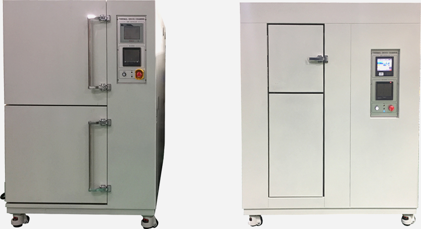
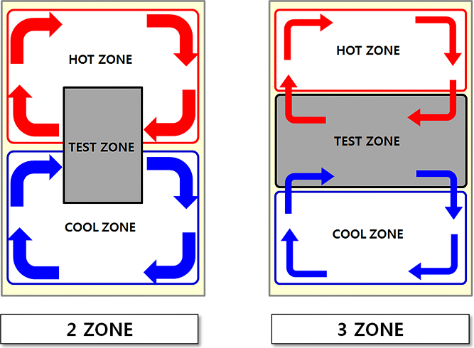

PRODUCT DETAIL / JT-TST 300~500
열충격 시험기
(Termal Shocking Test Chamber)

- - Model : JT-TST 300~500
- - High Temp. Range : RT ~ 200℃/Max
- - Low Temp. Range : -50℃ ~ RT
- - Dimension : 유저 선택사항 (원하는 사양적용가능)
- - Fan & Motor : SIROCCO FAN and 1/4HP Motor
- - Heating System : Electric wire heating system
- - 오존층 파괴를 방지하기 위하여 신냉매인 HCFC계통을 사용하여 환경보존에 최선을 다하고 있다.
- - Ceramic wool과 Polyurethane 구조의 이중 구조로 고온 및 저온에서도 단열효과가 뛰어나다.
- - 터치 타입 컨트롤러 : 챔버의 온도 제어를 직관적이고 손쉽게 제어 할수 있으며, 사용자가 원하는 스케줄에 맞쳐 프로그램이 가능합니다.
옵션사항
- 1. 레코더(RECORDER) : 온도의 진행사항을 실시간 기록하고 저장하는 장치 입니다.
- 2. 케이블 홀 (CABLE HOLE) : 챔버내로 케이블을 연결하는 홀 설치가 가능합니다.(사용자가 원하는 사이즈로 제작 가능)
- 3. 냉동기 냉각 방식 : 수냉식, 공냉식 방식 제작 가능
제품 특징
- 1. 열충격 시험기의 제어방식은 P.I.D 제어방식으로 사용자가 터치 Controller에서 설정된 프로그램으로 온도를 제어 하는 방식 입니다.
- 2. 열충격 시험기 2Zone은 테스트실이 고온실과 저온실을 설정한 시간 (Cycle)에 맞쳐 이동하여 테스트를 진행 합니다.
- 3. 열충격 시험기 3Zone은 고온실과 저온실 사이에 테스트실이 고정되어 있어 설정한 시간에 고온실 또는 저온실과 연결된 댐퍼가 열려 테스트실에 고,저온의 온도를 주입하여 테스트를 진행 합니다.
- 4. 챔버 내부의 사이즈는 사용자의 요청에 따라 주문 제작이 가능합니다.
- 5. 시스템 가동중 모든 알람신호는 사용자가 정확하게 인지할수 있도록 컨트롤러에 표시됩니다.
제품 동작 원리

제품 사양
| Model | JT-TST-300 | JT-TST-400 | JT-TST-500 | |
|---|---|---|---|---|
| Dimension (WxDxH)mm |
Internal | 300 x 300 x 300 | 400 x 400 x 400 | 500 x 500 x 500 |
| External | 1400 x 1600 x 1,800 | 1,500 x 1700 x 1,900 | 1,600 x 1,800 x 2,000 | |
| Temp. Range | RT ~ 150℃ | |||
| Temp. Uniformity | -50℃ ~ RT | |||
| Humid. Range | 30% ~98% R.H. | |||
| Temp. Heater | Electric Coil Heater | |||
| Fan & Motor | 알류미늄 Sirocco Fan & Motor | |||
| Compressor | Two stage refrigerating system | |||
| Exterior Material | SS41 Painting | |||
| Interior Material | SUS #304(polish) | |||
| Insulation Material | Polyurethane Foam | |||
| Electric Power | 220V 3PH 60Hz or 380V 3PH 60Hz | |||